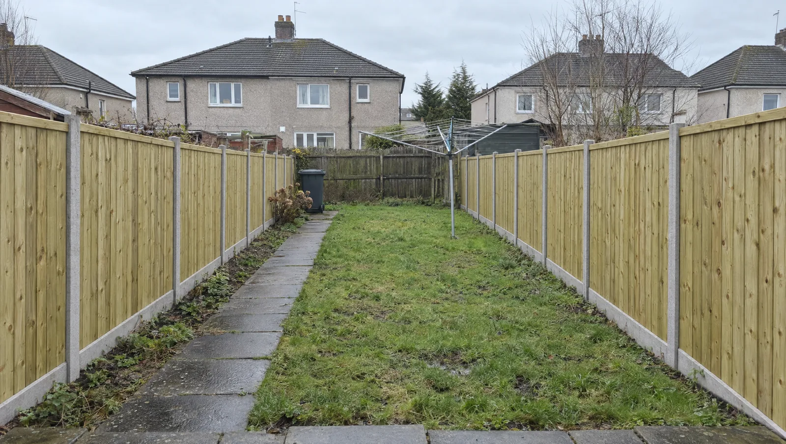
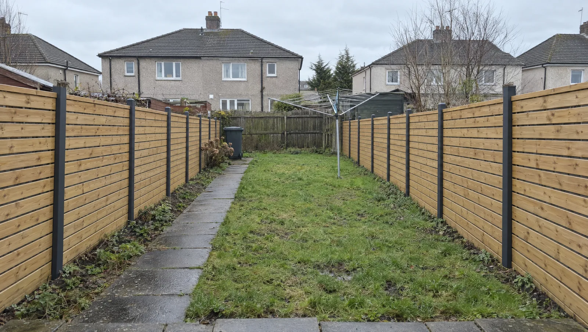
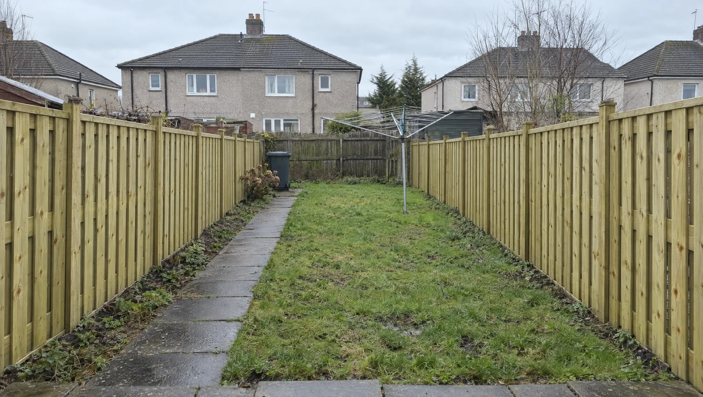
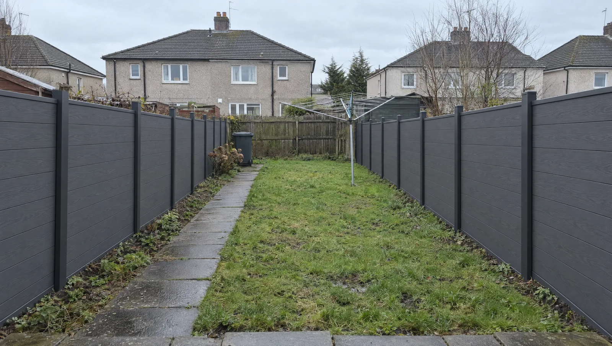

Fences, gates and repairs.
First Choice Fencing puts up new garden fences, hangs gates and fixes fences the weather has had a go at, across Wishaw, Motherwell, Hamilton and Lanarkshire.

Closeboard fencing
Feather-edge boards on rails, concrete posts and gravel boards: the hard-wearing garden standard.
From £52/m 02
Horizontal slatted fencing
Modern horizontal boards with even gaps and hidden fixings: the look that changes a garden.
From £82/m 03
Hit and miss fencing
Boards alternate either side of the rails, so both gardens get the good side and the wind gets through.
From £70/m 04
Composite fencing
Wood-plastic boards in aluminium posts. Never needs painting and will not rot.
From £130/m 05Garden gates
Side gates and driveway gates that match the fence and close without a shove.
From £380 06Fence repairs
Snapped posts, blown panels and leaning runs, fixed properly rather than propped.
From £95/postGet a price for your fence.
Ring with the rough length and the style you like, or build a guide price here first and bring it with you.